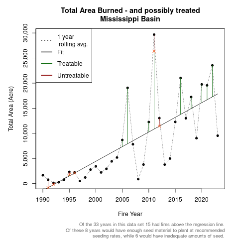

Estimating Seed Market Size in the US
from lifeforms to species
Reed Clark Benkendorf
Chicago Botanic Garden
December 13, 2024
Introduction
National Seed Strategy Keystone Initiative - Action Plan
Action 4. Enhance coordination (within DOI and across departments) to improve the native seed supply chain
- Short-term (implementation within 1st year of Action Plan)
- Develop seed need projections for DOI agencies
- Mid-term (implementation in 1-3 years of Action Plan)
- Develop seed need projections for DOI agencies for one-, five-, and ten-year time frames using NISRC national, central coordinating data platform (see Action #1)
historic seed purchase data
- Data were collected in times when seed availability is low.
- the right seed, was the available seed
- restricted to just a couple DOI regions and agencies
- unable to provide information on wants or needs
- All data are contextual - NISRC is a paradigm shift.
hesitations of farmers and investors
- Little knowledge of native species behavior in cultivation
- Little support from agricultural extensions
- They are betting on the market
- Market suffers in low fires years
- …
hesitations of farmers and investors
“There’s gold in them thar hills”
a framework for estimating seed need
- Domain
- all DOI regions (12)
- all DOI agencies (3/4?)
- Temporal Grain: Annual
- Spatial Grain: 30m
- short-medium-long term
- all require a couple core elements
- make these robust, while generating deliverables
- all require a couple core elements
modelling framework - short term
Four lifeforms: Grasses, Forbs, Shrubs, Trees
Spatial techniques to estimate total burned areas form basis for simulating areas to treat
Model
\[ \text{Cover Class}∗\text{Slope Category} ∗ \text{Restoration Type} * \text{Seeding Method}* \frac{\text{Pure Live Seed}}{\text{Area}}*\text{Prop. of seed mix lifeform} = \text{PLS required} \]
Data Sources
\[ \frac{\text{Cover Class} * \text{Slope Category}}{\text{Landscape}} * \frac{\text{Restoration Type} * \text{Seeding Method} * \text{Prop. Seed Mixes} * \text{Prop. of Mix}}{\text{Practicioner Knowledge}} \]
modelling framework - mid term
ten most commonly used species in each DOI region
Subtracting these quantities from ‘short’ term results gives the amount of other species to grow.
Model
\[ \text{Cover Class} * \text{Slope Category} * \text{Restoration Type} * \text{Seeding Rate} * \text{Prop. Seed Mixes} * \text{Prop. of Mix} * \text{PLS/lb} \]
Data Sources
\[ \frac{\text{Cover Class} * \text{Slope Category}}{\text{Landscape}} * \frac{\text{Restoration Type} * \text{Seeding Rate} * \text{Prop. Seed Mixes} * \text{Prop. of Mix}}{\text{Practicioner Knowledge}} * \frac{\text{PLS/lb}}{\text{NRCS}} \]
Model Details
Implementation
Bootstrap resampling from density functions based on the empirical distributions (bootstrap smoothing).
This allows us to ‘fill in’ the variance between respondents, and have more uniform responses in the simulations.
modelling framework - mid term
Example
“How much Elymus elymoides (species) is required on BLM land in DOI region 10 (domain) next year (grain)?”
modelling framework - long term
Able to use realized data from central data coordinating platform
associating seed need with costs
- Need to unify perspectives on the benefits of seed warehousing and fiscal costs
- full warehouses preclude further acquisitions
- empty warehouses lead to seed need in fire years
- Need a framework to balance these scenarios
Regression, treatable areas

Regression with rolling averages

Proposal
Three additional elements are required to achieve the modelling goals.
- documentation of historic seed usage, and desired seed usage
- better documentation of costs
- predicted data on disturbances
a survey of the experts I
The US federal land management agencies have a plurality of the worlds restoration expertise.
- biggest concern: completion
- minimize the number of questions each participant sees
- minimize the number of questions each participant sees
- Estimate based survey
- allows faster completion, less do-not-finish respondents
- Survey using R Shiny
- supports ‘dependencies’ within surveys
- Sends respondents from different regions and organizations different sets of questions
- Anticipated cost: $49 or $98
a survey of the experts II
Usage of chained dependencies minimizes the number of fields respondents interact with
survey questions theme
variables which alter seed based restoration by a factor of 2 or more
- Maximum slope which drill seeding is used at?
- Differences in PLS/area2 between drill, hydro, broadcast, and aerial seeding
- A general seed mix in scrub shrub has what proportions of graminoids, forbs, shrubs and tree seed?
- Of your most used species in scrub shrub
- What prop. of disturbed areas do you treat with them?
- What prop. of seed mixes are composed of them?
- What prop. of disturbed areas do you treat with them?
a survey of costs IV
Unable to make sense of any seed requirement modelling results, without incorporating costs.
A Nancy and R.C. adventure
Costs (warehousing)
- Seed death
- Shipping (RCB adventure)
- Disposal
- Internal movement
- Decreasing seed prices?
Benefits
- Not buying seed from 3rd party warehouses
- Ameliorating lost economic revenue from land degradation
Fire
- Products on probability of fire under current fire regime (exist!)
- Extreme Value Theory - associate sizes, and probabilities (return intervals) with extreme events.
- Markov chain for multiple burn fire return intervals
- Allow for more accurate predictions of burned areas in future.
an R package for seed need estimates
“the fundamental unit of distributable code in the R programming language”
Open, Reproducible, and Distributable Research With R Packages Josh Brinks
- Reproducible
- Avoids duplication of efforts
- Testable across Operating Systems (OS)
- Allows others to engage with problems at their ‘head’
Reporting
- farmers grow native seed
- farmers grow native seed
- politicians fund NISRC
- politicians fund NISRC
- Determine stocking levels in the seed warehouses
Units of Analysis
- DOI Wide
- Agency (e.g. NPS) wide
- Ecoregions
- Seed Transfer Zones
- DOI regions
… and all combinations thereof!
- allows procurement of funds at high administrative levels
- directing of funds across field offices
Timeline

Hours
Reed 16-24 hours per week, occasionally 40.
Nancy & R.C. 8-16 hours per week.
Becky 2-6 hours per week.
Ryan 2-6 hours per week.
Rebecca 16-24 hours per week.
Appendix
survey - short term I
Survey Result Relationships
survey - medium term II
Survey Result Relationships
slide test test
test